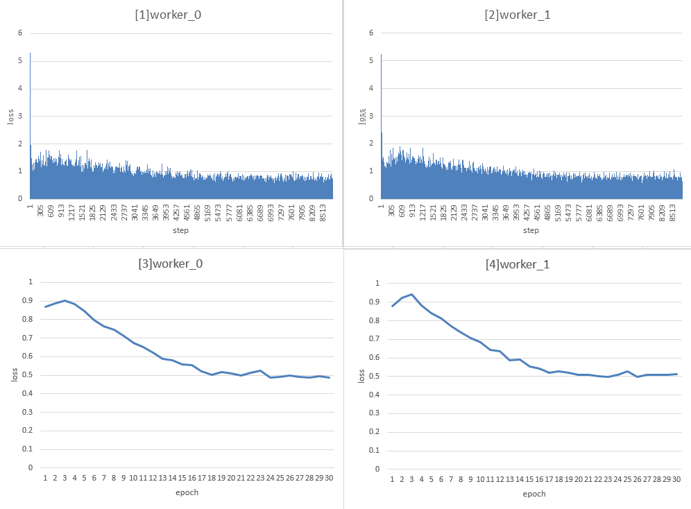

实现一个云云联邦的目标检测应用(x86)

联邦学习根据参与客户的不同可分为云云联邦学习（cross-silo）和端云联邦学习（cross-device）。在云云联邦学习场景中，参与联邦学习的客户是不同的组织（例如，医疗或金融）或地理分布的数据中心，即在多个数据孤岛上训练模型。而在端云联邦学习场景中参与的客户为大量的移动或物联网设备。本框架将介绍如何在MindSpore云云联邦框架上使用网络Fast R-CNN实现一个目标检测应用。
启动云云联邦的目标检测应用的完整脚本可参考这里。
任务前准备
本教程基于MindSpore model_zoo中提供的的faster_rcnn网络部署云云联邦目标检测任务，请先根据官方faster_rcnn教程及代码先了解COCO数据集、faster_rcnn网络结构、训练过程以及评估过程。由于COCO数据集已开源，请根据其官网自行下载好数据集，并作好数据集切分（例如模拟100个客户端，可将数据集切分成100份，每份代表一个用户）。
由于原始COCO数据集为json文件格式，云云联邦学习框架提供的目标检测脚本暂时只支持MindRecord格式输入数据，可根据以下步骤将json文件转换为MindRecord格式文件：
首先在配置文件default_config.yaml中设置以下参数：
参数
mindrecord_dir用于设置生成的MindRecord格式文件保存路径，文件名必须为mindrecord_{num}格式，数字num代表客户端标号0，1，2，3，……
mindrecord_dir:"./datasets/coco_split/split_100/mindrecord_0"参数
instance_set用于设置原始json文件路径。
instance_set: "./datasets/coco_split/split_100/train_0.json"
运行脚本generate_mindrecord.py即可生成
train_0.json对应的MindRecord文件，保存在路径mindrecord_dir中。
启动云云联邦任务
安装MindSpore
包括源码和下载发布版两种方式，支持CPU、GPU硬件平台，根据硬件平台选择安装即可。安装步骤可参考MindSpore安装指南。
目前联邦学习框架只支持Linux环境中部署，云云联邦学习框架需要MindSpore版本号>=1.5.0。
启动任务
参考示例，启动集群。参考示例目录结构如下：
cross_silo_faster_rcnn
├── src
│ ├── FasterRcnn
│ │ ├── __init__.py // init文件
│ │ ├── anchor_generator.py // 锚点生成器
│ │ ├── bbox_assign_sample.py // 第一阶段采样器
│ │ ├── bbox_assign_sample_stage2.py // 第二阶段采样器
│ │ ├── faster_rcnn_resnet.py // Faster R-CNN网络
│ │ ├── faster_rcnn_resnet50v1.py // 以Resnet50v1.0作为backbone的Faster R-CNN网络
│ │ ├── fpn_neck.py // 特征金字塔网络
│ │ ├── proposal_generator.py // 候选生成器
│ │ ├── rcnn.py // R-CNN网络
│ │ ├── resnet.py // 骨干网络
│ │ ├── resnet50v1.py // Resnet50v1.0骨干网络
│ │ ├── roi_align.py // ROI对齐网络
│ │ └── rpn.py // 区域候选网络
│ ├── dataset.py // 创建并处理数据集
│ ├── lr_schedule.py // 学习率生成器
│ ├── network_define.py // Faster R-CNN网络定义
│ ├── util.py // 例行操作
│ └── model_utils
│ ├── __init__.py // init文件
│ ├── config.py // 获取.yaml配置参数
│ ├── device_adapter.py // 获取云上id
│ ├── local_adapter.py // 获取本地id
│ └── moxing_adapter.py // 云上数据准备
├── requirements.txt
├── mindspore_hub_conf.py
├── generate_mindrecord.py // 将.json格式的annotations文件转化为MindRecord格式，以便读取datasets
├── default_config.yaml // 网络结构、数据集地址、fl_plan所需配置文件
├── config.json // 容灾所需配置文件
├── finish_cross_silo_fasterrcnn.py // 关闭云云联邦任务脚本
├── run_cross_silo_fasterrcnn_sched.py // 启动云云联邦scheduler脚本
├── run_cross_silo_fasterrcnn_server.py // 启动云云联邦server脚本
├── run_cross_silo_fasterrcnn_worker.py // 启动云云联邦worker脚本
└── test_fl_fasterrcnn.py // 客户端使用的训练脚本
注意在
test_fl_fasterrcnn.py文件中可通过设置参数dataset_sink_mode来选择是否记录每个step的loss值：model.train(config.client_epoch_num, dataset, callbacks=cb) # 不设置dataset_sink_mode代表只记录每个epoch中最后一个step的loss值，代码里默认为这种方式 model.train(config.client_epoch_num, dataset, callbacks=cb, dataset_sink_mode=False) # 设置dataset_sink_mode=False代表记录每个step的loss值
在配置文件default_config.yaml中设置以下参数：
参数
pre_trained用于设置预训练模型路径（.ckpt 格式）
本教程中实验的预训练模型是在ImageNet2012上训练的ResNet-50检查点。你可以使用ModelZoo中 resnet50 脚本来训练，然后使用src/convert_checkpoint.py把训练好的resnet50的权重文件转换为可加载的权重文件。
启动Scheduler
run_cross_silo_femnist_sched.py是为用户启动Scheduler而提供的Python脚本，并支持通过argparse传参修改配置。执行指令如下，代表启动本次联邦学习任务的Scheduler，其TCP端口为6667，联邦学习HTTP服务端口为6668，Server数量为4个，集群Scheduler管理端口为11202，--config_file_path用于设置配置文件路径，--dataset_path用于设置数据集绝对路径：python run_cross_silo_fasterrcnn_sched.py --scheduler_ip=10.113.216.124 --scheduler_port=6667 --fl_server_port=6668 --server_num=4 --worker_num=2 --scheduler_manage_port=11202 --config_file_path=$PWD/config.json --dataset_path='datasets/coco_split/split_100/'
打印如下代表启动成功：
[INFO] PS(631,2b316a813700,python):2021-08-31-19:49:42.784.715 [mindspore/ccsrc/ps/core/communicator/http_request_handler.cc:92] Run] Start http server! [INFO] PS(631,2b3084633a80,python):2021-08-31-19:49:42.796.904 [mindspore/ccsrc/ps/core/scheduler_node.cc:97] Initialize] [Scheduler start]: 2. The node role is:SCHEDULER, the node id is:e4b3c983-6d0c-470b-b487-1a247af97575 create a tcp server. [INFO] PS(631,2b316a411700,python):2021-08-31-19:49:42.796.929 [mindspore/ccsrc/ps/core/scheduler_node.cc:129] operator()] The scheduler node start a tcp server! [INFO] PS(631,2b3084633a80,python):2021-08-31-19:49:42.796.935 [mindspore/ccsrc/ps/core/scheduler_node.cc:410] StartUpdateClusterStateTimer] [Scheduler start]: 3. The scheduler star t a heartbeat timer! [INFO] PS(631,2b316a411700,python):2021-08-31-19:49:42.796.979 [mindspore/ccsrc/ps/core/communicator/tcp_server.cc:192] Start] Start tcp server!
启动Server
run_cross_silo_femnist_server.py是为用户启动若干Server而提供的Python脚本，并支持通过argparse传参修改配置。执行指令如下，代表启动本次联邦学习任务的Server，其TCP端口为6667，联邦学习HTTP服务起始端口为6668，Server数量为4个，联邦学习任务正常进行需要的worker数量为2个：python run_cross_silo_fasterrcnn_server.py --scheduler_ip=10.113.216.124 --scheduler_port=6667 --fl_server_port=6668 --server_num=4 --worker_num=2 --start_fl_job_threshold=2 --update_model_ratio=1 --fl_iteration_num=30 --start_fl_job_time_window=300000000000 --update_model_time_window=300000000000 --config_file_path=$PWD/config.json --dataset_path='datasets/coco_split/split_100/'
以上指令等价于启动了4个
Server进程，每个Server的联邦学习服务端口分别为6668、6669、6670和6671，具体实现详见脚本run_cross_silo_femnist_server.py。若只想在单机部署
Scheduler以及Server，只需将scheduler_ip配置项修改为127.0.0.1即可。若想让
Server分布式部署在不同物理节点，可以使用local_server_num参数，代表在本节点需要执行的Server进程数量：# 在节点1启动3个Server进程 python run_cross_silo_fasterrcnn_server.py --scheduler_ip=10.113.216.124 --scheduler_port=6667 --fl_server_port=6668 --server_num=4 --worker_num=2 --start_fl_job_threshold=2 --update_model_ratio=1 --fl_iteration_num=30 --start_fl_job_time_window=300000000000 --update_model_time_window=300000000000 --config_file_path=$PWD/config.json --dataset_path='datasets/coco_split/split_100/' --local_server_num=3
# 在节点2启动1个Server进程 python run_cross_silo_fasterrcnn_server.py --scheduler_ip=10.113.216.124 --scheduler_port=6667 --fl_server_port=6668 --server_num=4 --worker_num=2 --start_fl_job_threshold=2 --update_model_ratio=1 --fl_iteration_num=30 --start_fl_job_time_window=300000000000 --update_model_time_window=300000000000 --config_file_path=$PWD/config.json --dataset_path='datasets/coco_split/split_100/' --local_server_num=1
启动Worker
run_cross_silo_femnist_worker.py是为用户启动若干worker而提供的Python脚本，并支持通过argparse传参修改配置。执行指令如下，代表启动本次联邦学习任务的worker，联邦学习任务正常进行需要的worker数量为2个：python run_cross_silo_fasterrcnn_worker.py --scheduler_ip=10.113.216.124 --scheduler_port=6667 --fl_server_port=6668 --server_num=4 --worker_num=2 --client_epoch_num=1 --fl_iteration_num=30 --config_file_path=$PWD/config.json --dataset_path='datasets/coco_split/split_100/'
如上指令，
--worker_num=2代表启动两个用户，且两个用户使用的数据集分别为datasets/coco_split/split_100/mindrecord_0和datasets/coco_split/split_100/mindrecord_1，请根据任务前准备教程准备好对应用户所需数据集。
当执行以上三个指令之后，等待一段时间之后，进入当前目录下worker_0文件夹，通过指令grep -rn "\]epoch:" *查看worker_0日志，可看到如下类似打印：
epoch: 1 step: 1, loss is 0.6060338
则说明云云联邦启动成功，worker_0正在训练，其他worker可通过类似方式查看。
以上脚本中参数配置说明请参考API文档。
日志查看
成功启动任务之后，会在当前目录cross_silo_faster_rcnn下生成相应日志文件，日志文件目录结构如下：
cross_silo_faster_rcnn
├── scheduler
│ └── scheduler.log # 运行scheduler过程中打印日志
├── server_0
│ └── server.log # server_0运行过程中打印日志
├── server_1
│ └── server.log # server_1运行过程中打印日志
├── server_2
│ └── server.log # server_2运行过程中打印日志
├── server_3
│ └── server.log # server_3运行过程中打印日志
├── worker_0
│ ├── ckpt # 存放worker_0在每个联邦学习迭代结束时获取的聚合后的模型ckpt
│ │ └── mindrecord_0
│ │ ├── mindrecord_0-fast-rcnn-0epoch.ckpt
│ │ ├── mindrecord_0-fast-rcnn-1epoch.ckpt
│ │ │
│ │ │ ......
│ │ │
│ │ └── mindrecord_0-fast-rcnn-29epoch.ckpt
│ ├──loss_0.log # 记录worker_0训练过程中的每个step的loss值
│ └── worker.log # 记录worker_0参与联邦学习任务过程中输出日志
└── worker_1
├── ckpt # 存放worker_1在每个联邦学习迭代结束时获取的聚合后的模型ckpt
│ └── mindrecord_1
│ ├── mindrecord_1-fast-rcnn-0epoch.ckpt
│ ├── mindrecord_1-fast-rcnn-1epoch.ckpt
│ │
│ │ ......
│ │
│ └── mindrecord_1-fast-rcnn-29epoch.ckpt
├──loss_0.log # 记录worker_1训练过程中的每个step的loss值
└── worker.log # 记录worker_1参与联邦学习任务过程中输出日志
关闭任务
若想中途退出，则可用以下指令：
python finish_cross_silo_fasterrcnn.py --scheduler_port=6667
或者等待训练任务结束之后集群会自动退出，不需要手动关闭。
实验结果
使用数据：
COCO数据集，拆分为100份，取前两份分别作为两个worker的数据集
客户端本地训练epoch数：1
云云联邦学习总迭代数: 30
实验结果（记录客户端本地训练过程中的loss值）：
进入当前目录下
worker_0文件夹，通过指令grep -rn "\]epoch:" *查看worker_0日志，可看到每个step输出的loss值，如下所示：worker.log:11378:[flTrain]epoch: 1 step: 1, loss is 5.249325 worker.log:11388:[flTrain]epoch: 1 step: 2, loss is 4.0856013 worker.log:11398:[flTrain]epoch: 1 step: 3, loss is 2.6916502 worker.log:11408:[flTrain]epoch: 1 step: 4, loss is 1.3917351 worker.log:11418:[flTrain]epoch: 1 step: 5, loss is 0.8109232 worker.log:11428:[flTrain]epoch: 1 step: 6, loss is 0.99101084 worker.log:11438:[flTrain]epoch: 1 step: 7, loss is 1.7741735 worker.log:11448:[flTrain]epoch: 1 step: 8, loss is 0.9517553 worker.log:11458:[flTrain]epoch: 1 step: 9, loss is 1.7988946 worker.log:11468:[flTrain]epoch: 1 step: 10, loss is 1.0213892 worker.log:11478:[flTrain]epoch: 1 step: 11, loss is 1.1700443 . . .
worker_0和worker_1在30个迭代的训练过程中，统计每个step的训练loss变换柱状图如下[1]和[2]：
worker_0和worker_1在30个迭代的训练过程中，统计每个epoch的平均loss (一个epoch中包含的所有step的loss之和除以step数)的折线图如下[3]和[4]：
